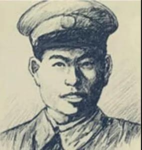
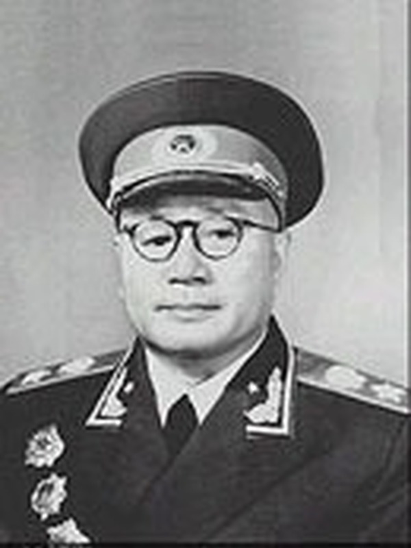
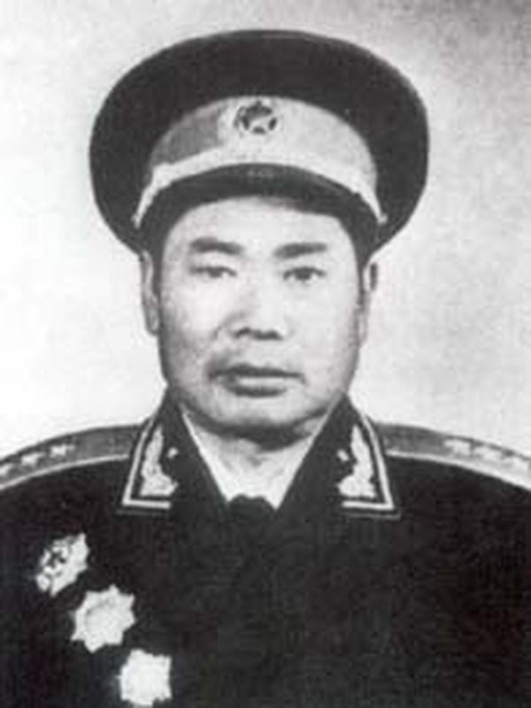
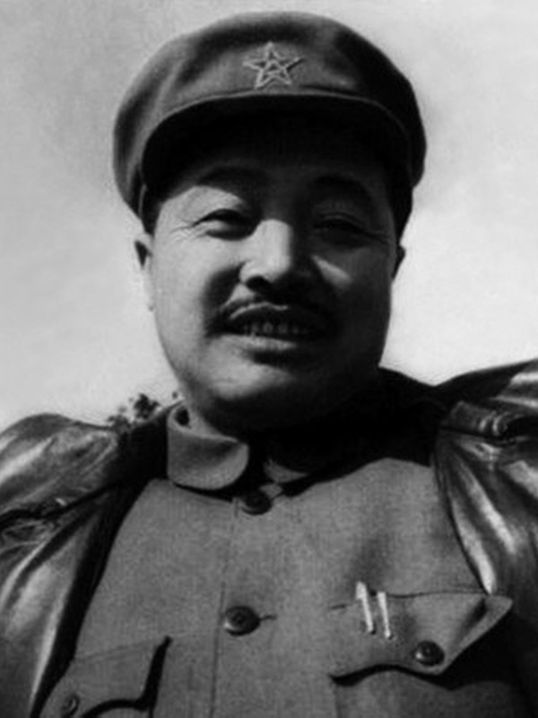

1934
战略转移
出发
中央红军从中央革命根据地出发，开始战略转移。湘江之畔，红军付出巨大牺牲，也由此开始深刻的反思与转折。
序章 PROLOGUE
1934年10月，中央红军从江西于都出发，踏上漫漫征途。两年间，红军将士穿越万水千山，战胜无数艰难险阻，于1936年10月在甘肃会宁、宁夏将台堡实现三大主力胜利会师。 九十载光阴流转，那条用信仰丈量的道路，依然指向今天。
“长征是宣言书，长征是宣传队，长征是播种机。” —— 毛泽东《论反对日本帝国主义的策略》（1935年12月）
01 峥嵘岁月
两年时间，一次改变中国命运的远征。用三个年份，读懂长征的出发、转折与胜利。
中央红军从中央革命根据地出发，开始战略转移。湘江之畔，红军付出巨大牺牲，也由此开始深刻的反思与转折。
遵义会议确立毛泽东在党中央和红军的领导地位。四渡赤水、巧渡金沙江、飞夺泸定桥，红军在绝境中开辟生路。
红一、红二、红四方面军在会宁、将台堡胜利会师，长征胜利结束。中国革命的力量在西北集结，走向新的历史阶段。
中央红军踏上征途
突破第四道封锁线
生死攸关的转折点
打开北上通道
中央红军长征结束
长征胜利结束
02 长征足迹
从于都河畔到会宁城下，十七个中央红军关键节点串起长征轨迹，三处会师地单独标注。点击节点，查看时间、地点与历史现场。
路线为教学展示用示意，不代表所有红军部队的统一行军路线。会宁、将台堡为不同方面军的会师地，地图未将其与中央红军路线连成一线。
03 长征群英
将领、战士、英烈与同行者。十六份人物档案，记录长征路上的选择与牺牲。

陈树湘 1905—1934 · 红五军团第34师师长 湘江战役中率部担任全军后卫，重伤被俘后断肠明志，壮烈牺牲，年仅29岁。 阅读档案 LM-04将领
刘伯承 1892—1986 · 红军总参谋长 1935年5月与彝族首领小叶丹彝海结盟，使红军顺利通过彝区，参与指挥强渡大渡河。 阅读档案 LM-14勇士
杨得志 1911—1994 · 红一军团第1团团长 1935年5月指挥安顺场强渡大渡河，17名勇士为红军打开北上通道。 阅读档案 LM-07将领
贺龙 1896—1969 · 红二方面军总指挥 1935年11月率红二、红六军团从湘鄂川黔根据地出发长征，1936年10月到达将台堡会师。 阅读档案点击开始参观后才会播放全景及声音；向下滚动离开展厅时自动停止。
05 影像印证 · VIDEO ARCHIVE
精选央视网长征主题纪录片与微视频，以权威影像补充网页叙事。点击卡片前往央视网观看完整内容。
 微视频
CCTV · 画映长征魂用经典美术作品回望长征经典美术作品与长征历史相互印证
微视频
CCTV · 画映长征魂用经典美术作品回望长征经典美术作品与长征历史相互印证
注：本站不转载视频文件，以上内容均跳转至央视网官方页面观看；历史场景视觉仍沿用本站主题插画。
翻越雪山，用信念丈量雪线。

为国铸剑，把理想融入国家需要。
历史画面为主题创作，当代人物影像用于精神主题对照。
06 精神丰碑
伟大的长征精神，是中国共产党人及其领导的人民军队革命风范的生动反映，是中华民族自强不息的民族品格的集中展示。
把全国人民和中华民族的根本利益看得高于一切，坚定革命的理想和信念。
为了救国救民，不怕任何艰难险阻，不惜付出一切牺牲。
坚持独立自主、实事求是，一切从实际出发。
顾全大局、严守纪律、紧密团结。
紧紧依靠人民群众，同人民群众生死相依、患难与共、艰苦奋斗。
06 参与体验
从阅读历史，到答题挑战，再到写下一句寄语——让纪念成为一次真正的参与。